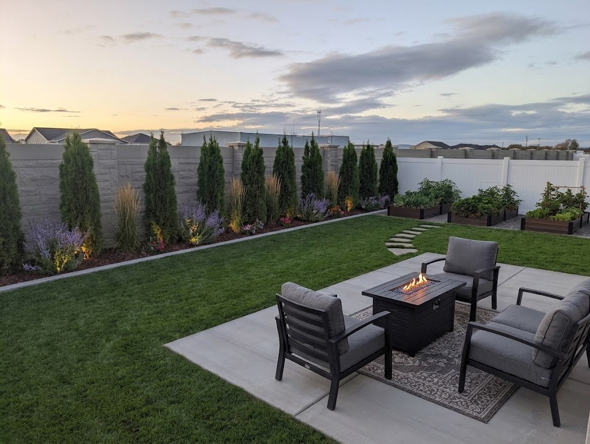
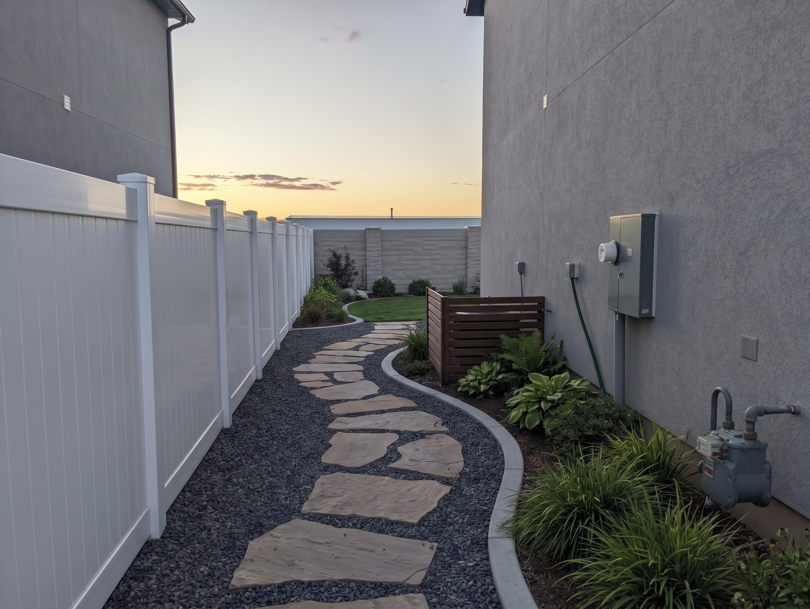
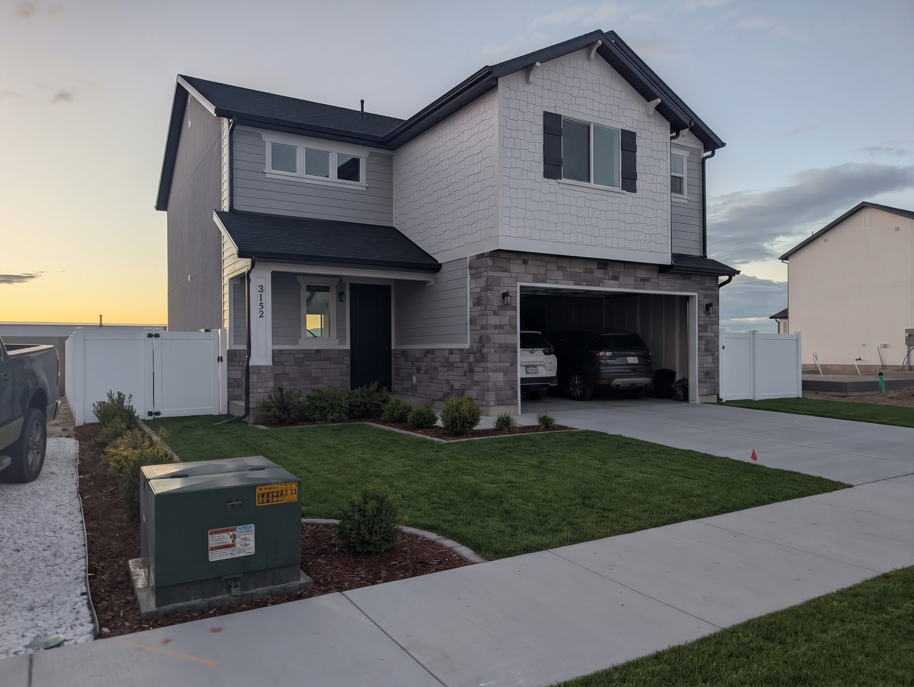

AI Landscape Concept Gallery (Backyard, Side Yard & Front Yard)
Click any concept image to inspect it in full resolution. Below includes a side-by-side comparison of the Baseline vs. Upgraded Backyard View 2, plus concepts for the Pergola & Garden Beds, South Side Yard Walkway, and Front Yard.
Backyard View 2: Builder Baseline vs. Track B Maximum-Grass Upgrade
.jpg) BEFORE / BASELINE CONCEPT
BEFORE / BASELINE CONCEPT
Baseline Concept: Monoculture row of 9 arborvitae along the West precast wall, basic patio chairs on bare concrete, and no pathway to the corner raised garden beds.

UPGRADED · TRACK B + MELINDA'S PATIO FIRE TABLEUpgraded Track B Concept: Interplanted Karl Foerster grasses & purple Russian Sage with warm 2700K uplighting, soil-flush charcoal flagstone steppers to dark espresso cedar beds, and deep cushioned armchairs around a rectangular propane fire table on the patio.
.jpg) BACKYARD & PERGOLA
BACKYARD & PERGOLA
Backyard View 1: Pergola & Raised Cedar Beds
Shows the dark-stained timber pergola over the 21'×12.5' patio with warm Bistro string lights, L-shaped sectional lounge, raised cedar garden boxes along the North fence, and wide-open turf.

SOUTH SIDE YARD (9.0' WIDE)South Side Yard: Flagstone Path & AC Screen
Transforms the 9.0' South side corridor with a curving grey gravel path, oversized flagstone steppers, concrete edging, hostas/ferns along the stucco wall, and a horizontal cedar screen hiding the AC unit.

FRONT YARD & SIDE GATESFront Yard: Maximum Lawn & Gate Symmetry
Illustrates the 555 sq ft SE front lawn, white vinyl side-yard gates flanking both sides of the house, foundation planting beds, and the green utility transformer box near the sidewalk ready for ornamental grass screening.